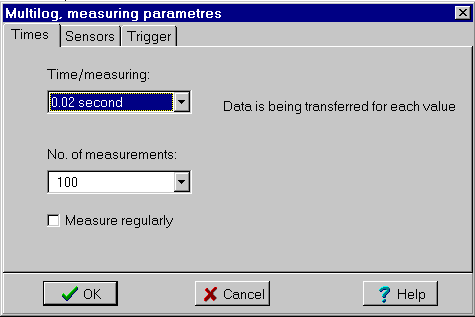

Menu in Datalyse:
Measure 1-6 inputs
Read log...
You can connect 6 sensors for measuring temperature, voltage, light, pressure etc. to the Multilog.
The resolution is 10 bits and the memory is 104 kb. The log can contain 100 different measuring series.
The Multilog is easy to set up when measuring off-line, and you can then transfer these measurings to a pc. You can measuring manually or using a trigger function.
When the log is opened in Datalyse, the measurings are written to the table and the graphs are drawn. Since the log can contain more measurings than you can paste into Datalyse, the log is copied to the clipboard as well.
Read log...
A measuring series is transferred in packets of 100 bytes. You can follow this on the display of the Multilog, and when the series has been transferred the display reads ---Transfer ## -- END
If you select Read log again, the next series is transferred.
Multilog measuring parameters
Note that the contents of the log are erased before each measuring. If you have saved any data in the log, you should transfer them to the pc before measuring online!

Tab sheet: Times
The possible times are:
When measuring manually you have to press »Samples« on the multilog for each value.
When the time per measuring is greater than or equal to 0.01 second, the data is transferred as they are being measured. If the time is smaller, the data is written in the log and not transferred until measuring is over.
When measuring online in Datalyse, you can set the number of measurings in steps from 10 to 2000.
If you check »Measure regularly«, Datalyse will repeat the measuring series until you press »Stop measuring« in Datalyse.
Note that the first measuring in every series is wrong. If the first measurings in a series have been made at 1s, 2s, 3s, ... it seems that the first measurement was made at 0s.
Tab sheet: Sensors
The Multilog has 3 sensor inputs, but you can connect a T-connector to every input and thus measure on 6 sensor simultaneously.
The sensor are read in the file »Multilog.ini« which contains a list of 40 sensors. The first 30 are »built-in«, the last 10 are user definable. These could for instance be vernier-probes. The file Multilog.ini contains:
No.\title\unit\minimum value\maximum value\decimals in table
You add a probe by clicking on Multilog.ini in the explorer and typing in the information on the probe: Minimum is the value at 0 volt and maximum is the value at 10 volt.
Tab sheet: Trigger
You can start measuring by trigging on one of the selected inputs. The trigging could be increasing value, decreasing value, event (measure times), control or timer.
Example: If discharging a capacitor, you could trig on decreasing and for instance 5 volt, and measuring begins when the voltage drops below 5 volt.
Increasing/decreasing:
Does not work satisfactorily! Measuring begins when the trig condition is fulfilled, but the values are wrong. There appears to be a delay of random length from Trigstart until measuring begins.
Event (measure times):
Here the device measures times at which the signal takes a specified value. The time is measured with an accuracy of 0.01 second. The measurings are correct except the first, which arrives too late.
Control:
For controlling external devices. This function does not work.
Timer:
This function does not work, which is odd, since it works when activated from control panel on the multilog.
Distributor in Denmark: A/S S. Frederiksen
Fourier Systems, Israel
web: www.fourier-sys.com
mail: four_mgs@netvision.net.il